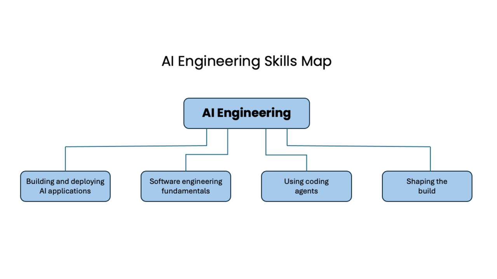

A research project across five professions
How AI skills
are changing.
What do employers expect people to do with AI? We map the skills in job ads to understand today’s expectations and build a baseline for tracking change.
Inspired by Andrew Ng’s AI Engineering Skills Map. The story behind this project
October 2026 / Sample comparison
Where AI appears
in job ads.
Same automated screen across all five samples. These are text matches, not measured workplace adoption. Employer context can trigger a match.
Definitions and full comparisonWe study advertised expectations, not observed workplace use. A missing mention does not mean a skill is absent from practice.
↗01 / Explore the work
Five professions.
A changing set of capabilities.
Compare AI text signals.
The common screen looks for AI-use, AI-product and enablement language in full ads. These signals can overlap; employer descriptions can also trigger a match.
All percentages use the retained ads in each occupational cohort as their denominator. The geography audit found one non-US design ad and nine unresolved UXR locations retained in these baseline counts; see the corroborated-US sensitivity in Methods. Scope, employer coverage, and coding affect comparisons. This is not a ranking of actual AI adoption.
The original inspiration
Andrew NgFrom AI engineering
to five professions.
Andrew Ng’s AI engineering skills map brings together the capabilities involved in building AI applications, using coding agents, and deciding what to build. His presentation at BayLearn prompted a broader question: what does AI expertise look like in other professions?
Changing Work follows his published hierarchy for software engineering and develops categories for UX research, design, product management, and marketing. The job-ad samples, coding rules, and counts are part of this independent study.

Map by Andrew Ng. Portrait from andrewng.org.
Behind the research
Kai Lukoff
Santa Clara University · Human-Computer Interaction Lab
Kai is an assistant professor of computer science and engineering at Santa Clara University, where he directs the Human-Computer Interaction Lab. His research examines human agency and human–AI interaction.
This project aims to help students, practitioners, and educators understand the AI capabilities employers describe and how those expectations differ across professions.
02 / How the study works
The method behind the map.
Built to make both the findings and their limits easy to examine.
This exploratory study examines public job descriptions from a bounded source. It keeps the original occupational samples distinct, records the coding rules, and links interpretations to source evidence.
What this can tell us
Which defined AI-related tasks and capabilities appear in these sampled job ads, how they are described, and where occupational expectations overlap.
What needs more evidence
03 / Following change over time
A baseline today.
A longer view in development.
The first release establishes a baseline. A time series needs repeated collection, consistent occupational boundaries, and versioned coding. One snapshot cannot establish a trend.
Stable measures. Keep comparison definitions fixed across collection periods.
Emerging practices. Review new activities separately, with their source and status visible.
Versioned changes. Recode earlier data or show a break when definitions change.
04 / Inspect and reuse
Open the research.
Download the public data and definitions, or examine the sources behind the framework.